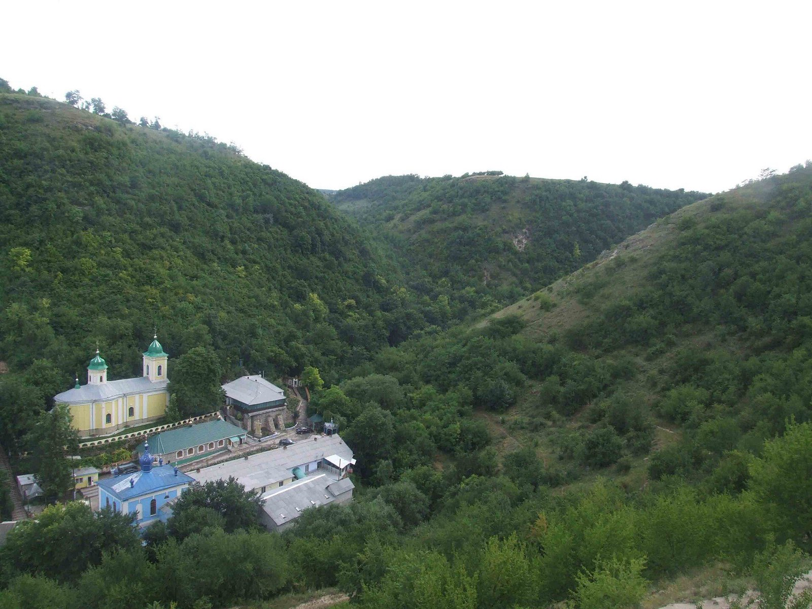

Transfer bancar
Donații în lei, euro sau dolari, direct în contul mănăstirii.
- Beneficiar
- [DENUMIREA OFICIALĂ]
- IBAN (MDL)
- MD00 XX00 0000 0000 0000 0000
- Banca
- [BANCA] · BIC [XXXXMD2X]
Casa Sfintei Treimi, între stânci și ape
Un loc de rugăciune și de liniște, unde pelerinii vin de aproape două veacuri și jumătate să se închine Sfântului Macarie și Maicii Domnului.
Mănăstirea se află la aproximativ 110 km de Chișinău, în satul Saharna. Porțile sunt deschise zilnic între orele 08:00 și 20:00.
Parcare gratuită la intrarea în mănăstire.
Curse regulate spre Rezina; de acolo, taxi sau microbuz local până în satul Saharna.
Pentru grupuri, vă rugăm să anunțați sosirea la secretariat cu câteva zile înainte.

Ore orientative — de confirmat cu secretariatul mănăstirii.
| Slujba | Luni – Sâmbătă | Duminica | Sărbători |
|---|---|---|---|
| Miezonoptica și Utrenia | 06:00 | 07:00 | 06:30 |
| Sfânta Liturghie | 08:30 | 09:00 | 09:00 |
| Acatistul Sfântului Macarie | 12:00 | 12:30 | 12:30 |
| Vecernia | 17:00 | 17:00 | 17:00 |
| Pavecernița | 19:00 | — | — |
Spovedania se face după Vecernie sau înainte de Sfânta Liturghie. Pentru Botez, Cununie și Maslu vă rugăm să vă programați la secretariat.

Numele celor dragi, vii și adormiți, vor fi pomenite de părinții mănăstirii la Sfânta Liturghie.
Vă mulțumim. Numele vor fi pomenite la cea mai apropiată Sfântă Liturghie.
Mănăstirea Saharna se află pe malul drept al Nistrului, în raionul Rezina, și este una dintre cele mai vechi și mai cunoscute mănăstiri din Moldova.
Aici se păstrează moaștele Sfântului Cuvios Macarie și icoana făcătoare de minuni a Maicii Domnului. Liniștea pădurilor, apele care coboară printre stânci și cântarea slujbelor aduc an de an mii de pelerini.



„Cel ce trece pragul acestei sfinte mănăstiri primește binecuvântarea Sfintei Treimi, iar Maica Domnului îl întâmpină ca pe un fiu așteptat.”
Mănăstirea se întreține din jertfa credincioșilor. Fiecare dar ajută la purtarea de grijă a bisericilor, a pelerinilor și a celor aflați în nevoie.
Donații în lei, euro sau dolari, direct în contul mănăstirii.
Donație online cu cardul sau din contul PayPal, din orice țară.
Donează prin PayPalPuteți lăsa darul la pangarul mănăstirii, unde se primesc și pomelnicele scrise de mână.
Programul de vizităRestaurarea acoperișului bisericii de vară și amenajarea spațiilor pentru primirea pelerinilor.
Strâns: [SUMA STRÂNSĂ] din [SUMA ȚINTĂ]
„Dătătorul de bună voie îl iubește Dumnezeu.” — 2 Corinteni 9, 7
Secretariatul răspunde zilnic între orele 09:00 și 17:00.